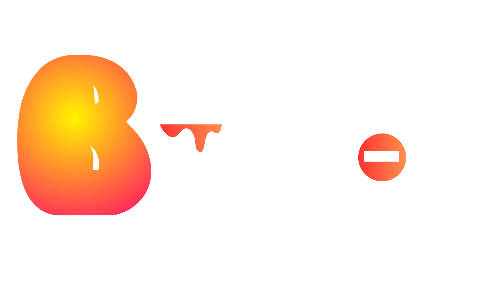

<section class="bucket-hero" data-split="bucket">
  <div class="bucket-inner">
    
    <p>Discover my abstract art generator and turn your ideas into a unique digital painting.</p>
    <a href="/buck-it.html" class="bucket-cta">Create</a>
  </div>
</section>

<script>
/* Smooth parallax */
const hero = document.querySelector('.bucket-hero');
function updateParallax() {
  const offset = window.scrollY * 0.15; // more visible than 0.1
  hero.style.setProperty('--bg-shift', `${offset}px`);
  requestAnimationFrame(updateParallax);
}
updateParallax();

/* Mouse-follow for CTA */
const cta = document.querySelector('.bucket-cta');
cta.addEventListener('mousemove', e => {
  const rect = cta.getBoundingClientRect();
  const x = ((e.clientX - rect.left) / rect.width) * 100;
  const y = ((e.clientY - rect.top) / rect.height) * 100;
  cta.style.setProperty('--x', `${x}%`);
  cta.style.setProperty('--y', `${y}%`);
});
</script>
